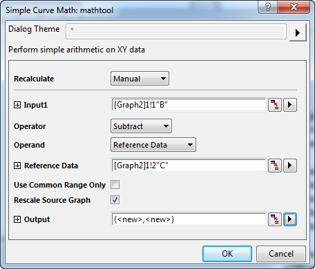

FAQ-961 Wie erhalte ich die Differenz oder Summe von zwei Kurven?
Math-of-two-curves
Letztes Update: 28.06.2018
- aktivieren Sie die Grafik mit zwei Kurven und wählen Sie Analyse: Mathematik: Einfache Kurvenmathematik, um den Dialog Einfache Kurvenmathematik zu öffnen.
- Wählen Sie eine Zeichnung als Eingabe1 (der Minuend/Summand), setzen Sie den Operator auf Subtrahieren/Addieren, setzen Sie den Operand auf Referenzdaten und wählen Sie eine andere Zeichnung als Referenzdaten (den Subtrahend/Addend) aus.
- 
- Wählen Sie <neu>: Neues XY als Ausgabe, um das Ergebnis zu speichern. Klicken Sie auf die Schaltfläche OK, um das Ergebnis zu erhalten.
Schlüsselwörter:Differenz, Summe, Zeichnung subtrahieren, Zeichnung addieren, Mathematik auf Kurven